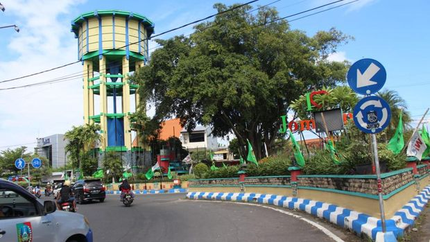

Hometown
Ringin Contong is a historic landmark with a unique story and located in the center of Jombang's town square. The site features a large banyan tree (ringin) planted on October 21, 1910, by Jombang's first Regent, Raden Adipati Arya Soeradiningrat V, to commemorate the founding of the Jombang Regency. 18 years later, in 1928, the Dutch colonial government constructed a large water culvert (contong) that passes through the tree's base as part of a water distribution system. Over the decades, the tree has grown in this structure, creating a visual of nature merging with historical infrastructure. Today, Ringin Contong stands as the most iconic symbol of Jombang, representing the city's origins and its connection to its colonial past.